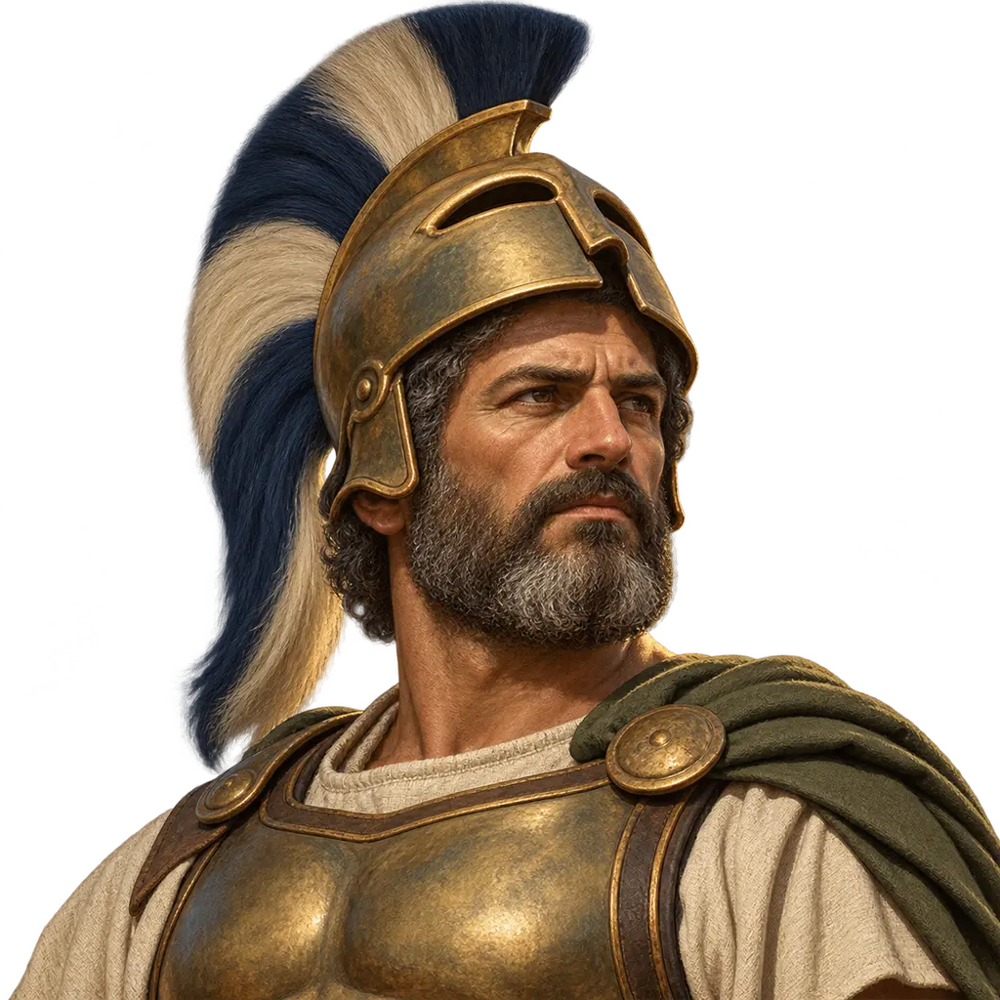
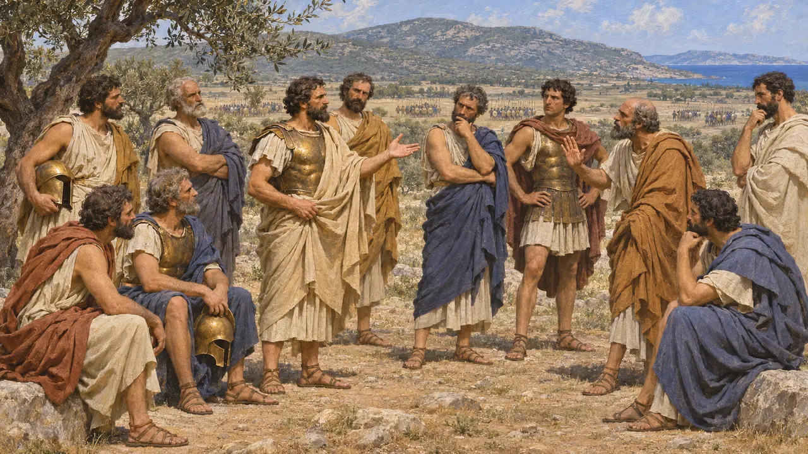
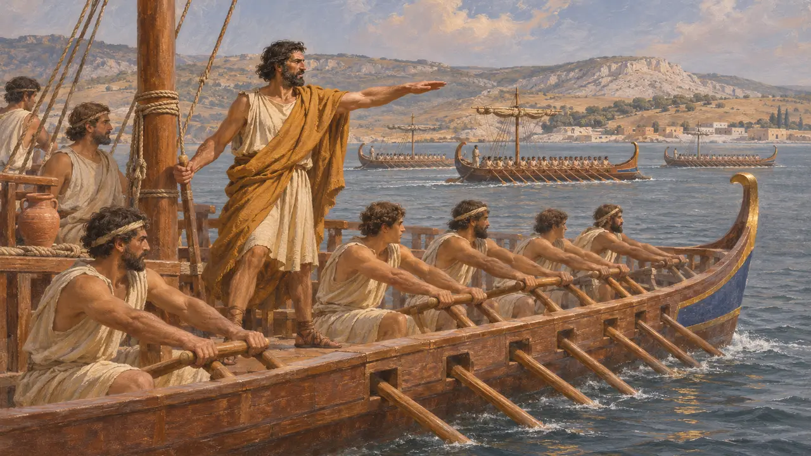
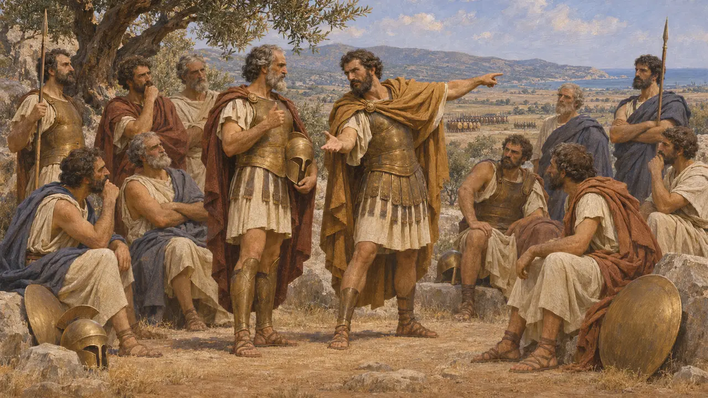
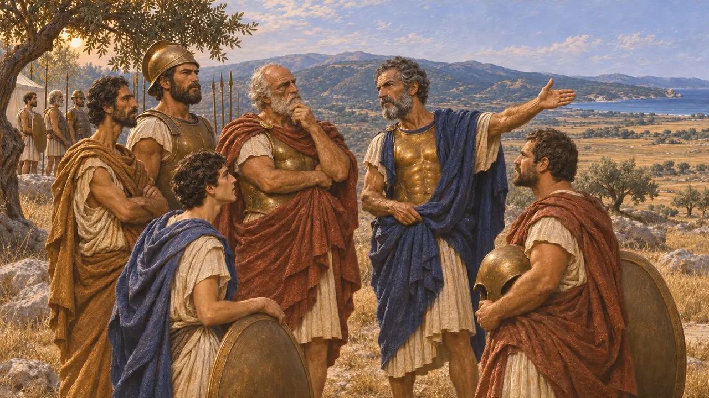
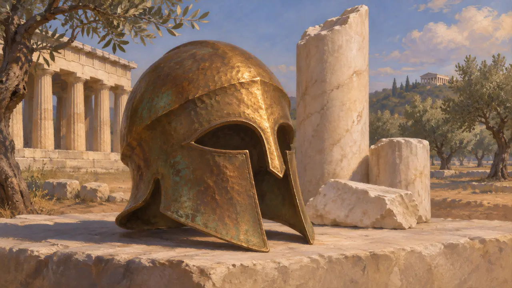

Encyclopédie › Soldats et navires

Généraux grecs
Chefs d'Athènes et des cités ioniennes en lutte contre la Perse, 499-490 av. J.-C.
Les cités grecques qui combattirent la Perse n'avaient pas de commandant suprême unique. Athènes élisait dix généraux, les stratèges, aux côtés d'un magistrat plus ancien, le polémarque. Les cités ioniennes révoltées chassèrent leurs tyrans et se choisirent leurs propres généraux, avec Aristagoras de Milet à leur tête. Leurs conseils et leurs querelles façonnèrent les campagnes de 499 av. J.-C. à 490 av. J.-C.
Dans le jeu : Dans les niveaux de Sardes et de Marathon, le camp grec aligne des commandants nommés Général athénien, Stratège athénien, Capitaine ionien et Callimaque le polémarque, chacun représentant une charge ou un personnage réels de l'époque.

Dix stratèges pour dix tribus
Récit antiqueHérodote rapporte qu'Athènes envoya dix stratèges à Marathon, dont Miltiade, et qu'ils étaient divisés sur l'opportunité de livrer bataille. La Constitution d'Athènes date de 501 av. J.-C./0 l'élection d'un stratège pour chacune des dix tribus, quelques années après les réformes de Clisthène. Un stratège servait un an et pouvait être réélu. Il commandait probablement le contingent de sa propre tribu et débattait de la stratégie avec les neuf autres.
Herodotus 6.103; 6.109; Athenaion Politeia 22.2

Les chefs de la révolte ionienne
Récit antiqueHérodote raconte qu'Aristagoras renonça à sa tyrannie à Milet et fit désigner des stratèges par les cités ioniennes. Pour la marche sur Sardes en 498 av. J.-C., il nomma à leur tête son frère Charopinos et Hermophantos. Mélanthios commandait les vingt navires athéniens, et Eualcidès menait les Érétriens jusqu'à sa mort près d'Éphèse. Avant Ladé, en 494 av. J.-C., Dionysios de Phocée entraîna la flotte sept jours durant, jusqu'à ce que les équipages refusent de continuer.
Herodotus 5.37-38; 5.97-102; 6.11-12

Callimaque et la voix décisive
Récit antiqueHérodote rapporte que les dix stratèges de Marathon étaient divisés et que l'avis prudent était près de l'emporter, mais que le polémarque disposait lui aussi d'une voix. Miltiade persuada Callimaque d'Aphidna de voter pour la bataille. Les stratèges exerçaient le commandement à tour de rôle, un jour chacun, et ceux qui étaient favorables au combat cédèrent leur jour à Miltiade, qui attendit pourtant le sien. Selon l'usage, le polémarque tenait l'aile droite, et Callimaque périt dans la mêlée.
Herodotus 6.109-111; 6.114

Qui commandait les Athéniens à Marathon
ContestéHérodote affirme que Callimaque fut désigné polémarque par tirage au sort. La Constitution des Athéniens date toutefois l'usage du tirage au sort pour les archontes de 487 av. J.-C./6, soit trois ans plus tard, ce qui laisse penser qu'il fut élu. Les historiens se demandent encore si le polémarque de 490 av. J.-C. était le véritable commandant ou seulement un collègue de rang supérieur des stratèges. L'image que donne Hérodote de Miltiade comme esprit directeur de la bataille reflète peut-être aussi des récits diffusés plus tard par la famille et les partisans de Miltiade.
Herodotus 6.109; Athenaion Politeia 22.5; P. Krentz, The Battle of Marathon, 2010

Des noms dans le bronze et la pierre
Dans les sourcesUn casque corinthien en bronze découvert à Olympie porte une inscription de dédicace de Miltiade à Zeus. On le rattache généralement au vainqueur de Marathon. Sur l'Acropole, des fragments d'une colonne de marbre portent une épigramme qui nomme Callimaque d'Aphidna comme polémarque. Son texte restitué est souvent lu comme un vœu accompli après sa mort à Marathon. Le casque est conservé au musée d'Olympie et la colonne au musée de l'Acropole.
Miltiades helmet, Archaeological Museum of Olympia; IG I³ 784
Sources
- Herodotus, Histories, books 5-6
- Athenaion Politeia 22
- IG I³ 784 (Callimachus dedication)
- P. Krentz, The Battle of Marathon, 2010
- P. Briant, From Cyrus to Alexander, 2002